class: center, middle ## Residual networks, neural ordinary differential equations and momentum networks https://arxiv.org/abs/2102.07870 Pierre Ablin ENS, Département de mathématiques et applications .affiliations[  ] --- ## Program ### 1 : Introduction to residual networks and neural ODEs ### 2 : Momentum networks Joint work with - **Michaël Sander** (ENS-DMA) - **Mathieu Blondel** (Google Brain) - **Gabriel Peyré** (CNRS & ENS) --- class: center, middle ## Residual networks --- ## Setting: ImageNet problem - 14.000.000 annotated images, 1000 classes - Train an algorithm, evaluate accuracy .center[ ] .footnote.tiny[Deng, Jia, et al. "Imagenet: A large-scale hierarchical image database." 2009] --- ## 2012: deep learning revolution .front[ - Previous methods based on hand crafted features + convex learning algorithms. Top-1 accuracy: **43 %** - New deep-learning method: Top-1 accuracy: **37 %** !! ] .footnote.tiny[Krizhevsky, A., Sutskever, I. and Hinton, G.E., 2017. Imagenet classification with deep convolutional neural networks] --- ## Deep ? - Proposed network 'AlexNet' .center[ 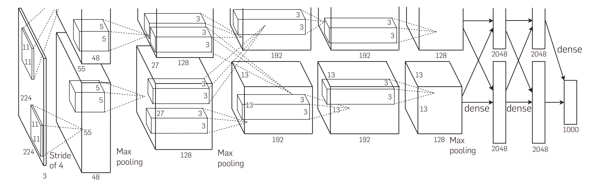 ] - Only 9 layers ! - Why not more? --- ## Universal approximation theory .front[ One layer of a neural network of the form $$ x_{n+1}= W_1^{\top} \sigma(W_2x_n + b_2) + b_1 $$ can approximate any continuous function that maps $x\_n$ to $x\_{n+1}$ when the first dimension of $W_1$, $W_2$ goes to infinity. [K. Hornik, M. Stinchcombe, and H. White. Multilayer feedforward networks are universal approximators.] ] --- ## Deeper = better? .center[ <table> <tr> <td style="border-width: 0px"> 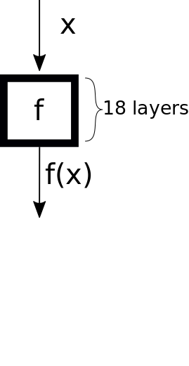 <br/> </td> </tr> </table> ] --- ## Deeper = better? .center[ <table> <tr> <td style="border-width: 0px"> <br/> </td> <td style="border-width: 0px; padding: 10px"> 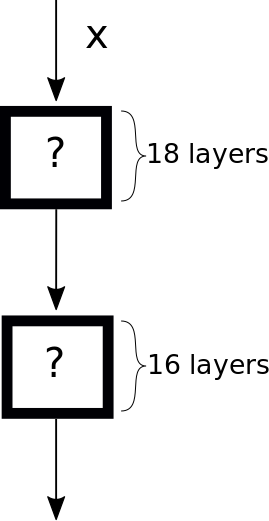 <br /> </td> </tr> </table> ] --- ## Deeper = better? .center[ <table> <tr> <td style="border-width: 0px"> <br/> </td> <td style="border-width: 0px; padding: 10px"> 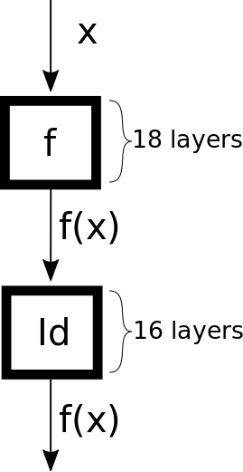 <br /> </td> </tr> </table> ] --- ## But in practice... .center[ 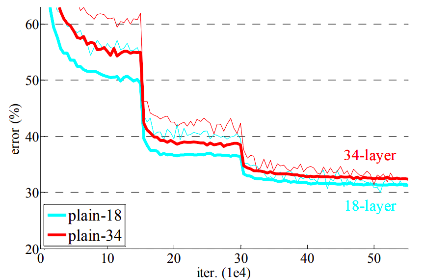 ] --- ## But in practice... .center[ ] - This happens because machine learning = model + learning algorithm. - The learning algorithm (SGD here) does not find a good set of parameters: **implicit bias** --- ## Residual networks: deep networks without pain - Idea: make it easy for the learning algorithm to learn identity by reparametrization $$ x_{n+1} = f(x_n, \theta_n) $$ .center[becomes] $$ x_{n+1} = x_n + f(x_n, \theta_n) $$ - Only learn the residual $f(x, \theta)$ between two layers - Easy to learn identity: set $f = 0$ - Makes it practical to stack many layers --- ## Residual networks in practice $$ x_{n+1} = x_n + f(x_n, \theta_n) $$ - $x_{n+1}$ and $x_n$ are constrained to have the same dimension - In practice, alternate residual blocks with downsampling - Allows to benefit from increasing depth .footnote.tiny[He et al., Deep Residual Learning for Image Recognition, 2015] --- ## Residual networks in practice .center[ 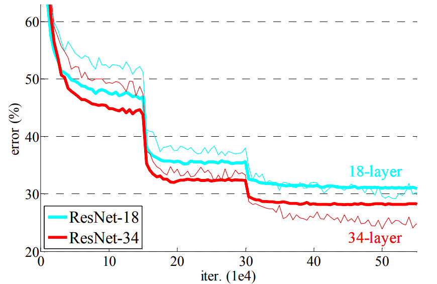 ] ResNet with **152** layers: **19.4 % ** top-1 accuracy on imagenet - Used in many domains --- class: center, middle ## Neural Ordinary Differential equations --- ## Residual networks as Euler discretization Resnet with $L$ layers $$ x_{n+1} = x_n +\frac1L f(x_n, \theta_n) $$ can be seen as the Euler discretization of the Ordinary Differential Equation (ODE) $$ \dot x(t) = f(x(t), \theta(t))\enspace, $$ where $x_n \simeq x(\frac n L)$ and $\theta_n = \theta(\frac n L)$, with step $\frac1L$. .footnote.tiny[Chen et al, Neural Ordinary Differential Equations, 2018] --- ## NeuralODE The NeuralODE replaces the mapping $x_1\to x_L$ by the mapping $$\phi_{\theta}: x(0) \to x(1)\enspace, \text{ with } \dot x = f(x, \theta)$$ - The mapping can be approximated using better solvers than Euler discretization, e.g. Runge-Kutta. - It provides invertible layers: the mapping $x(0) \to x(1)$ is bijective, and we can recover $x(0)$ by solving the equation backwards in time. --- ## NeuralODE .center[ 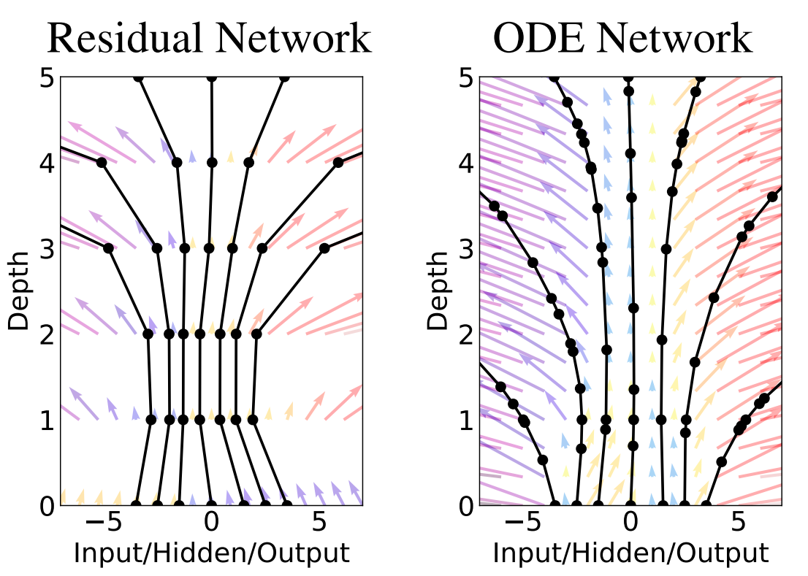 ] --- ## Advantages of NeuralODEs - No memory required: you can recompute the trajectory during backprop, so no need to store activations - Gives insights on the behavior of residual networks when the #layers $\to \infty$ - Useful for generative modeling (normalizing flows) --- ## Problems to solve - Trajectories constrained by Cauchy-Lipschitz: they cannot intersect. In $1$-D, impossible to learn $x\mapsto -x$. - Hard to convert a working residual network architecture in a working neural ODE: what is $\theta(t)$? - Not yet applied in realistic scenarios (e.g. on Imagenet) --- class: center, middle ## Our contribution: Momentum Networks https://arxiv.org/abs/2102.07870 "Momentum residual neural networks" --- ## Goals .middle[ Derive a simple extension of Residual Networks that: - Requires no memory - Has more representation capacity - Can be plugged easily in usual architectures (minimal change to the code) ] --- ## Memory in neural networks - Memory bottleneck: **not** storing parameters, storing **activations** during backprop - Example: ResNet, fully connected, $L$ layers $$ \color{red}{x\_{n+1} } =\color{red}{x\_{n} } + \color{blue}{W\_2^{\top} } \sigma(\color{blue}{W\_1}\color{red}{x\_{n} }) $$ - $\color{blue}{W\_1},\color{blue}{W\_2}$ of size $p\times d$ - Number of parameters = $\color{blue}{2\times p\times d \times L}$ - Store activations $\color{red}{x\_{n} }$ for backprop: $\color{red}{d \times L}$ per sample - Usually take batches of hundreds, thousands of samples Much worse with convolutional layers : fewer parameters per layers, same activation sizes --- ## Memory in neural networks ResNet 152 on Imagenet: .center[ 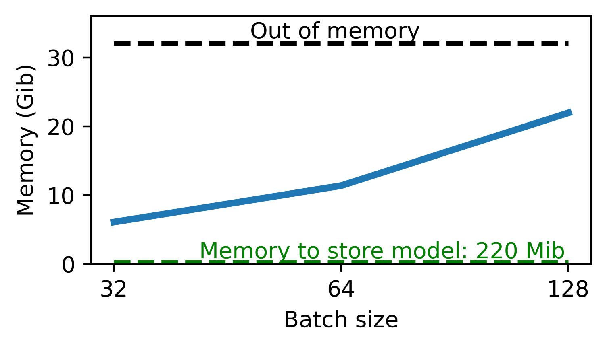 ] --- ## Invertible neural networks - Bottleneck is storing the $x_n$. - If you can re-compute them on the fly, then no need to store ! - Invertible layers: $$x\_{n+1} = F(x\_n)$$ $$x\_n = G(x\_{n+1})$$ The inverse $G$ should be - Easy to compute - Numerically stable --- ## Momentum networks ResNet: $$ x\_{n+1} = x_n + f(x_n) $$ MomentumNet: $$v\_{n+1} = \lambda v\_n + f(x\_n)$$ $$x\_{n+1} = x\_n + v\_{n+1}$$ Adds a momentum term to the equation: $v_n$ accumulates previous states. --- ## Momentum networks are invertible $$v\_{n+1} = \lambda v\_n + f(x\_n)$$ $$x\_{n+1} = x\_n + v\_{n+1}$$ Given $v\_{n+1}$ and $x\_{n+1}$, we have $$ x\_n = x\_{n+1} - v\_{n+1} $$ $$ v\_n = \frac1\lambda\left(v\_{n+1} - f(x\_n)\right) $$ **Fast inversion** --- ## Properties - When $\lambda =0$, you recover the ResNet. **Easy to plug-in** a working ResNet architecture. - Much smaller memory footprint .center[ 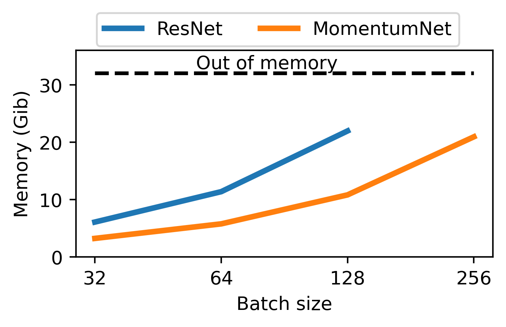 ] --- ## Training curves (on CIFAR 10) .center[ 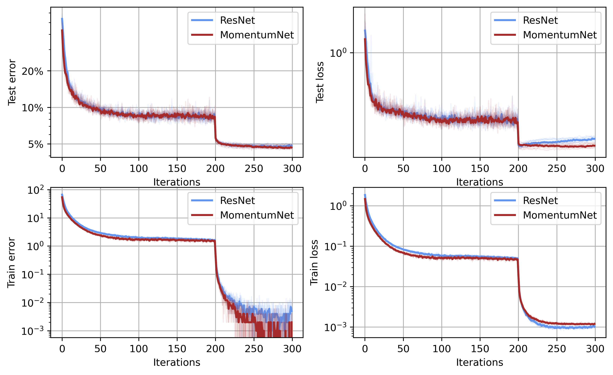 ] --- ## Faster training ? Less memory = larger batches = more efficient on a GPU Experiment on large images (fine-tuning) .center[ 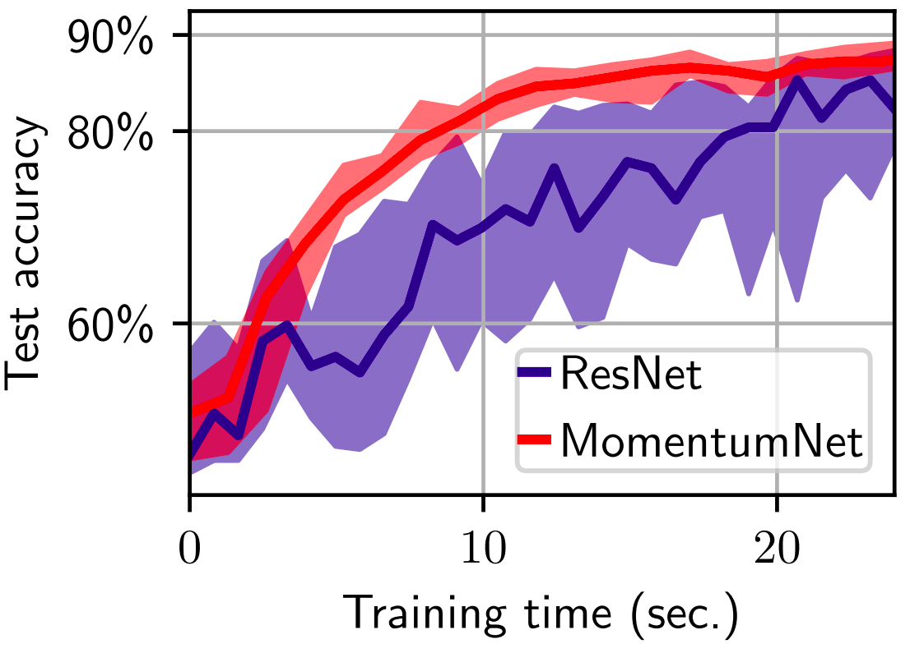 ] --- ## Theoretical properties - Can a 'deep' Resnet transform this 2-D point clouds into **linearly** separable datasets? .center[ 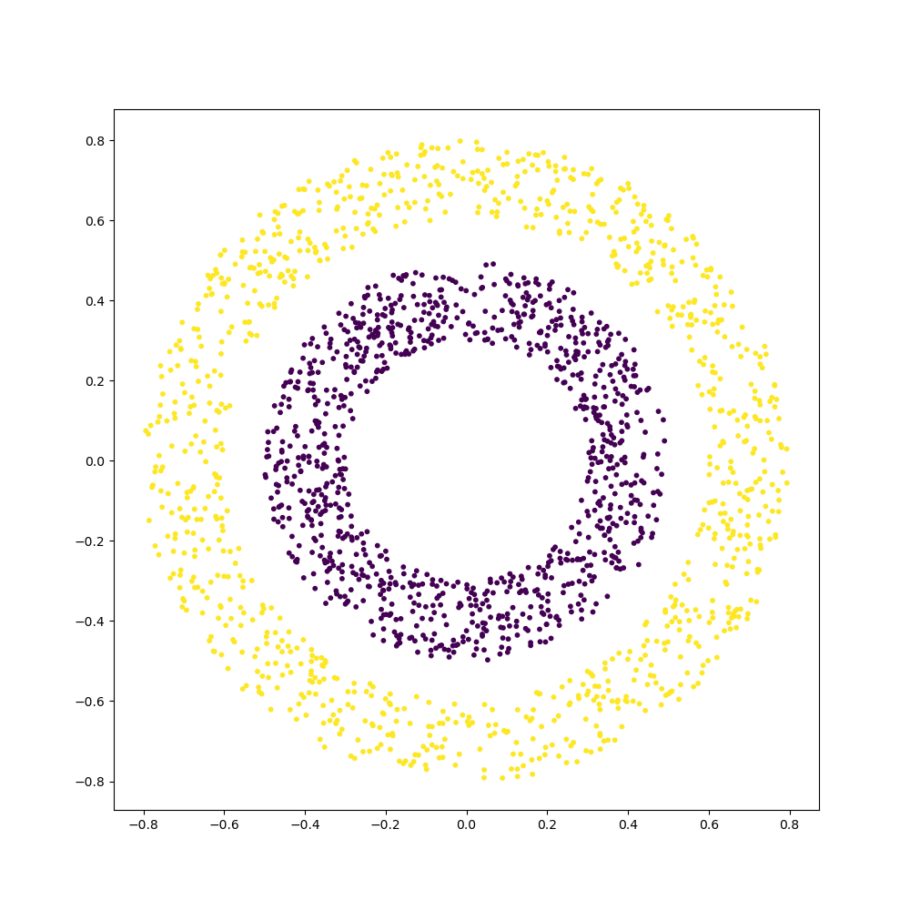 ] --- ## Theoretical properties - Training a 100 layers momentum net: .center[ 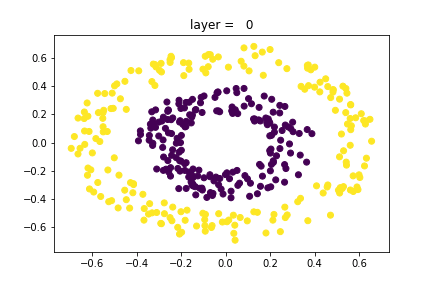 ] More representation capacities than ResNet? --- ## Continuous limit, linear case MomentumNets are equivalent to the second order ODE: $$\varepsilon \ddot x + \dot x = f(x, \theta)$$ Linear case: $$f(x, \theta) = Ax, \enspace A \in \mathbb{R}^{p\times p}$$ ### Can we characterize the set of learned functions $x(0) \to x(1)$ when $A$ changes? --- ## Continuous limit, linear case $$ \dot x = Ax$$ - $\varepsilon = 0$ : ResNet. The mapping is $x(1) = Bx(0)$ with $B= \exp(A)$. Set of learned mappings $=$ image of matrix exponential For diagonalizable matrices, necessary and sufficient conditions: - $0$ not eigenvalue - Any $<0$ eigenvalue must have even multiplicity (come by pair) --- ## Continuous limit, linear case $$\varepsilon \ddot x + \dot x = Ax$$ - $\varepsilon \neq 0$ : Momentum Net. The mapping is $x(1) = Bx(0)$ with $$B = e^{-\frac1{2\varepsilon}}\sum_{n=0}^{+\infty}\left(\frac1{(2n)!} + \frac1{2\varepsilon(2n+1)!}\right) (\frac{A}{\varepsilon} + \frac{I_p}{4\varepsilon^2})^n.$$ --- ## Continuous limit, linear case $$\varepsilon \ddot x + \dot x = Ax$$ In **1-D**: learn all maps $x \to \alpha x$ with $\alpha > \alpha_{min}(\varepsilon)$ .center[ 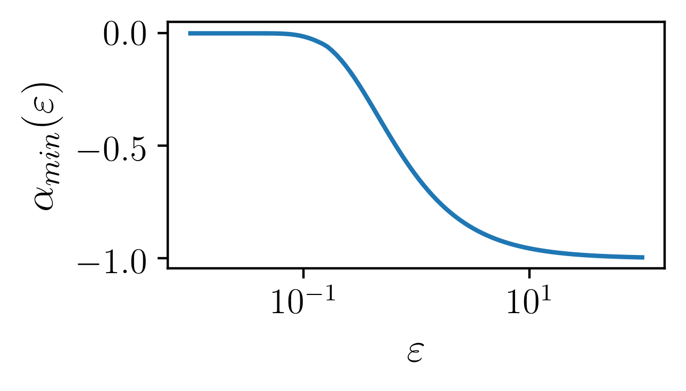 ] In **n-D**: real eigenvalues that are not by pair should be $>\alpha_{min}(\varepsilon)$ As soon as $\varepsilon > 0$, can learn maps with negative determinants ! - More representation capacity ! --- ## General case - If $\dot x = f(x)$, then $$ \varepsilon \ddot x + \dot x = f(x) + \varepsilon f'(x) \times f(x) $$ $$ \varepsilon \ddot x + \dot x = g(x) $$ so: ### A continuous momentum net can learn any mapping learned by a NeuralODE --- ## Summary - New slight modification of the ResNet forward rule becomes memory-efficient - Can be plugged easily in working resnets architectures, training is as easy - More representation capacities - Simple Python + pytorch package to plug and play: .center[ https://github.com/michaelsdr/momentumnet ] --- class: center, middle # Thanks ! --- ## Learning with NeuralODES How can we learn the parameters of the NeuralODE? If we have a loss $\ell(\theta) = \mathcal{L}(x(1))$, we find: $$ \frac{\partial \ell}{\partial \theta} = \int_{1}^0 a(t)^{\top} \frac{\partial f}{\partial \theta}(x(t), \theta(t)) dt $$ where $a(t)$ is the *adjoint* of the equation, defined by: $$ a(1) = \mathcal{L}'(x(1))$$ $$ a'(t) = - a^{\top}(t) \frac{\partial f}{\partial x}(x(t), \theta(t)) $$ - Continuous equivalent of backpropagation --- ## Learning with NeuralODES Framework: - **Forward** : From $x_0$, compute $x(1)$ using an ODE solver - **Backprop** : Compute $\mathcal{L}'(x(1))$, and solve simultaneously starting from $t=1$ $$ [x(1), a(1), g(1)] = [x(1), \mathcal{L}'(x(1)), 0] $$ $$ x'(t) = f(x(t), \theta(t)) $$ $$ a'(t) = -a^{\top}(t) \frac{\partial f}{\partial x}(x(t), \theta(t)) $$ $$ g'(t) = a(t)^{\top} \frac{\partial f}{\partial \theta}(x(t), \theta(t))] $$ - Return the gradient $g(0)$. --- ## Stability of inversion Unfortunately, **not stable** so far. Example: $$x\_{n+1} = F(x\_n) = \lambda x\_n + 1 $$ is inverted by $$x\_n\leftarrow G(x\_{n+1}) = \frac1\lambda(x\_{n+1} - 1)$$ But if you iterate $F$ enough times, you get to $x\_{\infty} = \frac{1}{1 -\lambda}$, and then **numerical** inversion cannot be performed: information loss **Idea :** only store the lost bits. Storage $\sim \lambda \ll 1$ .footnote.tiny[Maclaurin et al. Gradient-based hyperparameter optimization through reversible learning.]